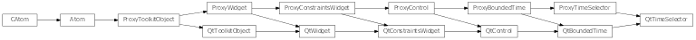

Bases: enaml.widgets.bounded_time.BoundedTime
A time widget that displays a Python datetime.time object using an appropriate toolkit specific control.
A python time format string to format the time. If None is supplied (or is invalid) the system locale setting is used. This may not be supported by all backends.
A time selector is free to expand in width by default.
A reference to the ProxyDateSelector object.

Bases: enaml.qt.qt_bounded_time.QtBoundedTime, enaml.widgets.time_selector.ProxyTimeSelector
A Qt implementation of an Enaml ProxyTimeSelector.
A reference to the widget created by the proxy.
Return the current time in the control.
| Returns: | result (time) – The current control time as a time object. |
|---|
Set the widget’s minimum time.
| Parameters: | time (time) – The time object to use for setting the minimum time. |
|---|
Set the widget’s maximum time.
| Parameters: | time (time) – The time object to use for setting the maximum time. |
|---|